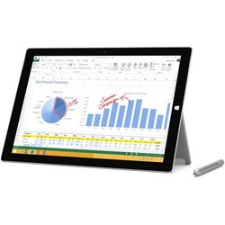

|  |
| The tablet that can replace your laptop. Whether you call it a hybrid, convertible, or 2 in 1, the new Surface Pro 3 is in a category of its own. With a stunning 12" display in a sleek magnesium frame, Surface Pro 3 has all the power and performance of a laptop in an incredibly lightweight, versatile form. It may just be the ultimate device. |
Add to Cart |